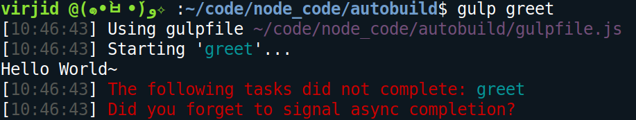
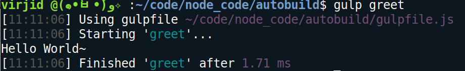
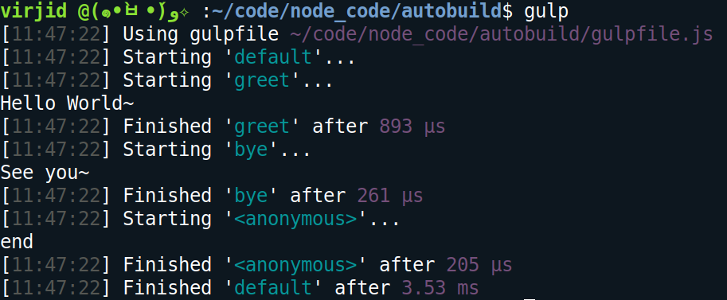
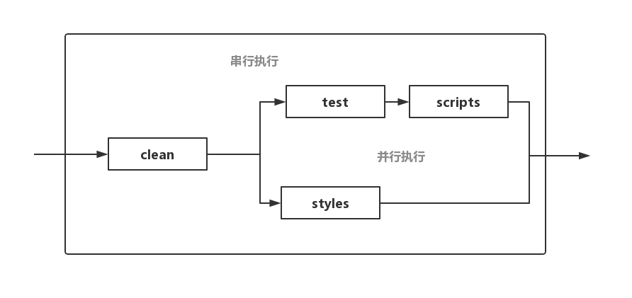

Gulp与Grunt一样，也是一个自动任务运行器。它充分借鉴了Unix操作系统的管道（pipe）思想，很多人认为，在操作上，它要比Grunt简单。
Quick start
Install
首先对Glup进行安装（下面的两条命令都需要执行）：
1 | npm install -g gulp-cli |
Gulp有一个 全局安装的命令行接口gulp-cli 和一个 本地安装的gulp 。其中本地gulp才是核心，它提供了所有的API并负责执行所有的构建任务，而命令行接口仅仅负责检查本地gulp并去启动它。
很多工具都会分别提供一个核心模块和一个命令行接口。命令行接口完全是为了便于用户使用工具，建议全局安装;而核心模块则是背后真正工作的程序，一般都会安装在本地。Gulp即使脱离了命令行接口也是可以运行的，你可以把它当作一个普通的Node模块来调用。
安装完Glup工具后，我们还需要根据具体的任务安装相应的Glup插件。比如，当我们需要压缩JS代码时，常常会用到gulp-uglify插件模块：
1 | npm install --save-dev gulp-uglify |
Gulpfile.js
Glup安装完成后，在项目根目录下创建glupfile.js文件，它是Glup的配置文件，并且Gulp会去自动寻找它。一个简单的glupfile.js文件内容可以是这样的：
1 | var gulp = require('gulp'); // <- 加载gulp模块 |
上面代码中，gulpfile.js加载gulp和gulp-uglify模块之后，使用gulp模块的task方法指定任务minify。task方法有两个参数，第一个是任务名，第二个是任务函数。在任务函数中，使用gulp模块的src方法，指定所要处理的文件，然后使用pipe方法，将上一步的输出转为当前的输入，进行链式处理。
task方法的回调函数使用了两次pipe方法，也就是说做了两种处理。第一种处理是使用gulp-uglify模块，压缩源码；第二种处理是使用gulp模块的dest方法，将上一步的输出写入本地文件，这里是build.js（代码中省略了后缀名js）。
Run
执行minify任务时，就在项目目录中执行下面命令就可以了。
1 | $ gulp minify |
Gulp模块的基本方法
src()
gulp模块的src方法，用于产生数据流。它的参数表示所要处理的文件，这些指定的文件会转换成数据流。参数的写法一般有以下几种形式。
js/app.js：指定确切的文件名。js/*.js：某个目录所有后缀名为js的文件。js/**/*.js：某个目录及其所有子目录中的所有后缀名为js的文件。!js/app.js：除了js/app.js以外的所有文件。*.+(js css)：匹配项目根目录下，所有后缀名为js或css的文件。
src方法的参数还可以是一个数组，用来指定多个成员。
1 | gulp.src(['js/**/*.js', '!js/**/*.min.js']) |
dest()
dest方法将管道的输出写入文件，同时将这些输出继续输出，所以可以依次调用多次dest方法，将输出写入多个目录。如果有目录不存在，将会被新建。
1 | gulp.src('./client/templates/*.jade') |
dest方法还可以接受第二个参数，表示配置对象。
1 | gulp.dest('build', { |
配置对象有两个字段。cwd字段指定写入路径的基准目录，默认是当前目录；mode字段指定写入文件的权限，默认是0777。
task()
task方法用于定义具体的任务。它的第一个参数是任务名，第二个参数是任务函数。下面是一个非常简单的任务函数。
1 | gulp.task('greet',()=>console.log('Hello World~')); |
执行greet任务时，终端屏幕上会出现类似于下面的情况：

图中红色警告说greet任务并没有完成，实际上是因为任务是异步执行的，并且greet任务在执行完成后并没有去告知gulp，导致gulp不知道任务已经完成了。
1 | gulp.task('greet',done=>{ |
gulp在执行任务时会将一个参数 (即上面的done) 注入到任务函数中，当我们调用done时就等价于在告知gulp该任务已经执行完毕：

调用异步函数时是不会出现阻塞情况的，所以通常异步执行的函数要在执行完成后告知调用者执行情况，然后调用者才能根据情况来做相应的处理。
如果一个任务的名字为default，就表明它是“默认任务”，在命令行直接输入gulp命令，就会运行该任务。
1 | gulp.task('default', ()=>{ |
串行执行和并行执行
串行执行强调的是顺序，比如必须先执行完任务A才能再执行任务B;而并行执行的任务之间是没有先后顺序的。
series
gulp使用series方法来定义一条顺序（串行）执行的执行链：
1 | gulp.task('greet', done=>{ |

需要注意串行执行链上的每个子任务都要告知gulp自己的执行情况，如果gulp不知道子任务的执行情况就无法继续执行下一个任务。串行执行链可以很好地控制任务之间的依赖关系，进而形成一条依赖链。
parallel
gulp使用parallel方法来定义一条并行执行的执行链，只需要将series改为parallel即可。
串并行混合
假设我们的执行链有如下子任务：
- 清空所有编译结果 clean任务
- 编译ES6的代码 scripts任务
- ES6语法检查 test任务
- SCSS编译 styles任务
我们的任务链大致长这样：
